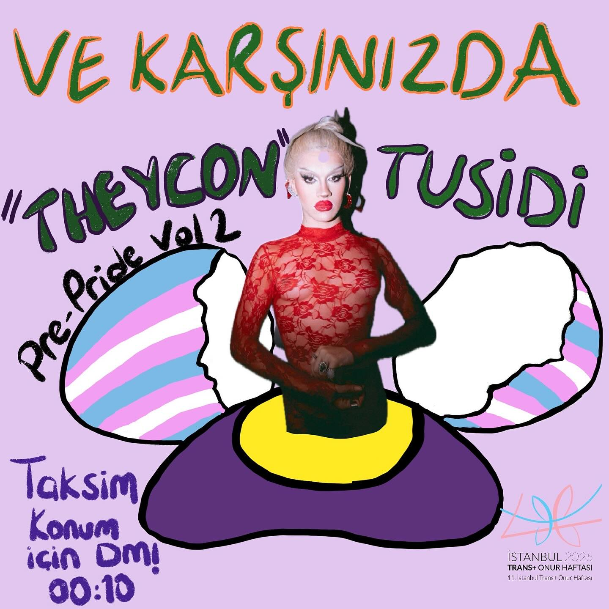
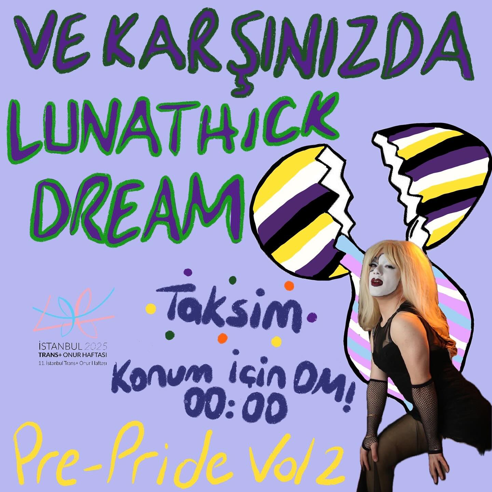

2025-01-31 10:30:00
🥚✨ Sürpriz yumurtamız kırıldı!
Tüm dünya literatürünce kabul edildiği üzere vegan yumurtadan drag queen çıkar.
Bu sene tutulacak kimseyi bulamadın mı? Neyse ki İstanbul’un en tutar iki queen’i 13 Şubat’ta bizimle!
Ee, o kadar danstan sonra ayaklarımızı yerden kesecek bir şov şart oldu, değil mi?
Tusidi’ye aşık olman için Eros’un mesai harcamasına gerek yok. O, gördüğün en iyi halüsinasyon.
AMA YETMEZ!
Yeteneği isminden de kalın, namıdiğer rüyalarının prensesi Lunathick Dream de bizimle.
Biz çok yükseldik, ya sen?
Daha sürprizlerimiz bitmedi ama iyi başladık sanki 🫦
💸 Doktorlar söylüyor mu bilmiyoruz ama lubunya bilimciler diyor ki:
Koşulsuz ve geri dönülemez aşkın tek tedavisi bahşiş vermek! Katılmazsan, 10 yıl şanssızlık garanti—kurşun döktürsen bile kurtulamazsın.
📍 Konum için DM at!
⏰ 13 Şubat 22:00 - 14 Şubat 04:00
💰 Giriş 150 TL, ama biliyoruz ki lubunyAşk hesap kitap kaldırmaz!
O yüzden cüzdanını aşkına açıp, 200-250 TL ile bu geceyi daha da şanlatabilirsin aşkım!
Partiye gelemiyor ama destek olmak istiyorsan üzülme! Askıda bilet uygulamamız var! Bize DM’den mesaj atabilirsin.
Askıda biletten faydalanmak istiyorsan kapıdaki görevli arkadaşlara söyleyebilir ya da DM’den bize ulaşabilirsin.
Hadi aşkım, pistte kaymaya, tutulmaya ve vegan yumurtadan çıkan mucizeleri izlemeye hazır ol! 💄✨

